Точная диагностика, лечение
и профилактика заболеваний
у экзотических животных
и профилактика заболеваний
у экзотических животных
Необычным животным нужен особенный подход
Специализированное отделение
Без стресса
Диагностика
специфических
заболеваний
специфических
заболеваний
Ветеринар-экзотолог – это специалист, который занимается здоровьем животных, не являющихся обычными домашними питомцами (не кошки и не собаки).
Вам нужен экзотолог, если у вас:

Такие пациенты имеют видовые особенности, поэтому обычные ветеринарные врачи не могут определить отклонение от нормы или заметить патологии и, следовательно, назначить адекватное лечение.
Ядовитых пациентов не принимаем в связи с правилами безопасности
Ваш питомец заслуживает лучшего!
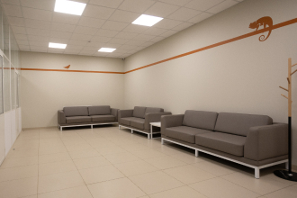
Зона ожидания, отдельная от собак и кошек
Экзотические животные дольше адаптируются к новой незнакомой среде. Поэтому создали уютную атмосферу без стресса в зоне ожидания.
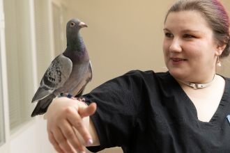
Врачи, знающие особенности и привычки экзотических животных
Это включает в себя не только знания об их физиологии и общих заболеваниях, но и нужные навыки и опыт для обращения с такими пациентами.
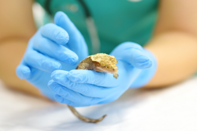
Лечение без стресса
Мы стараемся свести к минимуму стресс и болевые ощущения наших пациентов. Самые безопасные протоколы седации, анестезии, обезболивания.
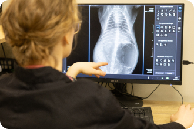
Современное высокоточное оборудование для визуальной диагностики
- УЗИ
- Рентген
- КТ – дает возможность обследовать пациентов весом от 30 гр.
Собственная лаборатория
Можем получить результаты анализов уже через 15 мин после взятия крови, что крайне важно в экстренных случаях.
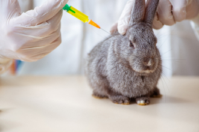
Наличие необходимых вакцин для проведения плановой вакцинации экзотических питомцев
Вакцинация – лучший способ защитить своего любимца от опасных инфекций. Профилактические прививки очень важны для многих экзотических питомцев – кроликов, хорьков, енотов, сурикатов, лисиц.
Специальные инструменты и медикаменты
Для оказания экстренной и плановой медицинской помощи для кроликов, черепах, рептилий.
Проведение редких и сложных операций
Опыт хирургов и профессиональное оборудование позволяют проводить самые сложные операции.
Первое, что следует сделать, принеся домой нового экзотического питомца - прийти с ним на приём к экзотологу.
Большинство болезней связаны с неправильным содержанием в домашних условиях. Но также влияет порода и генетическая предрасположенность к заболеваниям. В природе они живут гораздо меньше, чем в домашних условиях - поэтому некоторые болезни не встречаются в дикой среде у экзотических животных.
Лечить намного дороже, чем изначально проконсультироваться и выполнять рекомендации
Один-два раза в год рекомендуется показывать питомца врачу, даже если с животным все хорошо
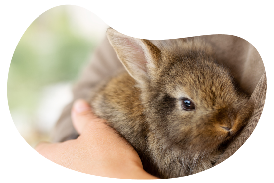
В силу врожденных особенностей экзотические животные отлично скрывают признаки недомогания. Особенно это касается тех, кто обладает стратегией сокрытия боли и покажет что-то, только когда все уже совсем плохо. Это грызуны и кролики - эволюционный механизм который помогает им выживать, заставляет их скрывать боль *
Профилактические осмотры очень важны!
* пример такого случая
Выборочное питание у кролика
Владельцы заметили, что кролик перестал есть сено и стал больше есть сочных кормов (травы) – на профилактическом приеме оказалось, что у кролика дентальные проблемы и отросшие щечные зубы царапали язык.
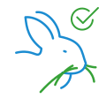
В результате
Этому кролику пришлось в срочном порядке проводить подпиливание щечных зубов для того чтобы избавить его от боли при приеме пиши. В этот же день он начал кушать больше сена.
Помните, забота о вашем питомце — это не только профессиональное лечение во время болезни, но и профилактика заболеваний с помощью регулярных визитов к ветеринарному врачу-экзотологу.
Врач даст рекомендации по уходу, кормлению и содержанию питомца (рацион, температурный режим, влажность и др.)
Врач даст рекомендации по уходу, кормлению и содержанию питомца (рацион, температурный режим, влажность и др.)
Что ждет вас и вашего питомца на приеме у специалиста по экзотическим животным
Прием начинается с беседы на тему содержания - как и чем кормят, в каких условиях содержат, когда заметили признаки болезни, одним словом, со сбора анамнеза жизни и болезни.
Здесь следует знать, что любая, даже самая незначительная деталь в жизни вашего питомца может оказаться решающей. Поэтому постарайтесь предоставить врачу максимум информации.
Далее производится осмотр животного с использованием специальных инструментов. Если есть необходимость, проводим дополнительную диагностику с использованием УЗИ, рентгена и анализов крови.
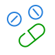
После постановки диагноза, вашему питомцу будет назначено лечение, оно может быть консервативным (прием тех или иных препаратов, смена рациона, коррекция условий содержания) или оперативным.
Почему важно начать лечение вовремя
Появление симптомов обычно указывает на уже критическое состояние экзота. В этом случае не стоит тянуть с посещением ветеринара
На что вам, прежде всего, стоит обращать внимание
Ваш питомец стал менее активным
Изменилось поведение
Вам кажется, что он вялый
Стал больше пить
Или
Пропал аппетит или отказывается от любимой еды
Появились слюни на подбородке
Появились проблемы с кожей/шерстью/перьями *
* пример такого случая
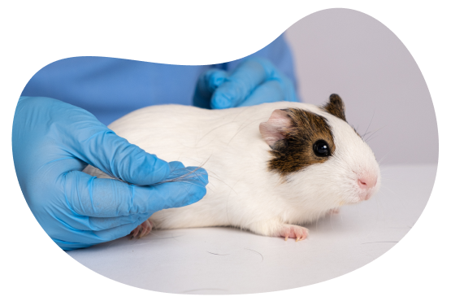
У морской свинки 2.5 лет заметили облысение на спине. На приеме пальпаторно определили, что есть подозрение на проблемы с яичниками и эти облысения - скорее гормон-зависимые алопеции. На УЗИ предварительный диагноз подтвердился и этой свинки оказался поликистоз яичников. После удаления яичников и матки алопеции через 3 месяца пропали.
Ни в коем случае не занимайтесь самолечением!
Большинство методик лечения и препараты, которые широко применяются в лечении кошек и собак, для грызунов и рептилий запрещены!
Владельцы заподозрили эктопаразитов у кролика и нанесли противопаразитарный препарат на холку. Через несколько часов кролику стало плохо и он умер. Некоторые препараты будь то от паразитов или антибиотики не подходят кроликам и грызунам и вызывают острый токсический эффект, поэтому лучше чтобы конкретно врач по экзотическим животным назначал лечение и препараты.
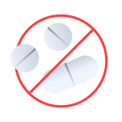
Ветеринары-экзотологи
Обладают необходимыми знаниями и опытом, чтобы обеспечить должную заботу, диагностику и лечение для ваших экзотических питомцев.
Диагностика – важная часть лечения вашего питомца
У экзотических животных могут быть необычные симптомы и заболевания, что делает диагностику сложной. Иногда требуется проведение специальных тестов и обследований для определения причины проблемы. Наши клиники оснащены высокоточным оборудованием для бережных и безопасных исследований:
УЗИ экспертного уровня
Высокочувствительные рентген-аппараты
КТ/МРТ – помогает диагностировать заболевания на самой ранней стадии
Дентальный компьютерный томограф с высокой разрешающей способностью для мелких животных
Лабораторная диагностика позволяет оценивать анализы крови с минимального объема крови (0,2 мл для общеклинического анализа и 0,5 мл для биохимического)
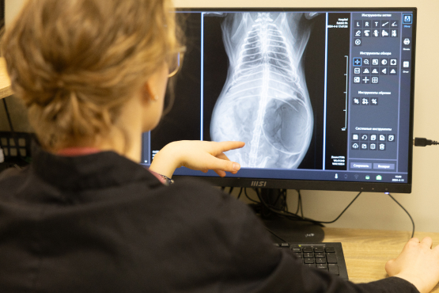
Мы предусмотрели все, если вашему питомцу потребуется хирургическое лечение
Операционные укомплектованы новейшим оборудованием - новейшие ветеринарные стойки для газовой анестезии, мониторы на которых можно отслеживать все жизненно-важные показатели во время наркоза.

Хирургические операции проводятся в стерильной операционной с минимально затраченным временем.
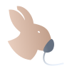
Специальный наркозный аппарат для мелких домашних животных.
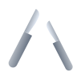
Используются специальные инструменты - электроножи и коагуляторы маленького размера, чтобы избегать лишние кровопотери.
Услуги и цены
Возвращаем здоровье вашим любимцам
Познакомьтесь с нашим отделением экзотологии

{kind=link}
{kind=link}
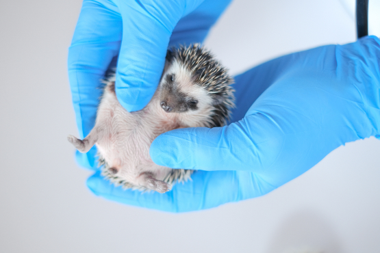
Предоставление ветеринарной помощи экзотическим домашним питомцам требует опыта, терпения и осторожного обращения.